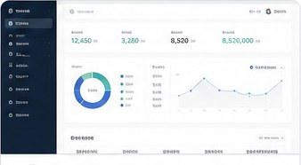
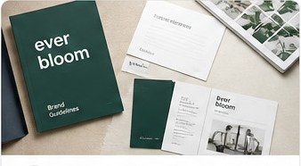

제안 — 확정 아님. ux-philosophy/reference-main.html 의 구성을 그대로 따르고, 색값을 정본 토큰으로 바꾸고 · 배너를 실제 슬라이드로 만들고 · 반응형을 더했다. 확인이 필요한 항목은 README.md 에 있다.
ux-philosophy/reference-main.html
README.md
검증된 경력과 실제 결과물을 비교하고, 계약까지 안전하게 이어가세요.
인기 검색 React Figma 쇼핑몰 리뉴얼 관리 시스템
기획부터 개발까지 한팀처럼
비슷한 프로젝트를 근거로 범위를 먼저 알려드립니다

합의한 금액과 일정이 그대로 계약서가 됩니다

모집 중이거나 모집 예정인 프로젝트만 보입니다. 마감된 것은 전체 보기에서 찾을 수 있습니다.